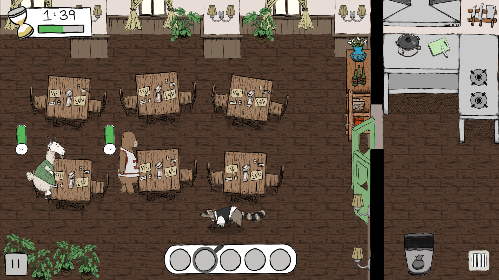
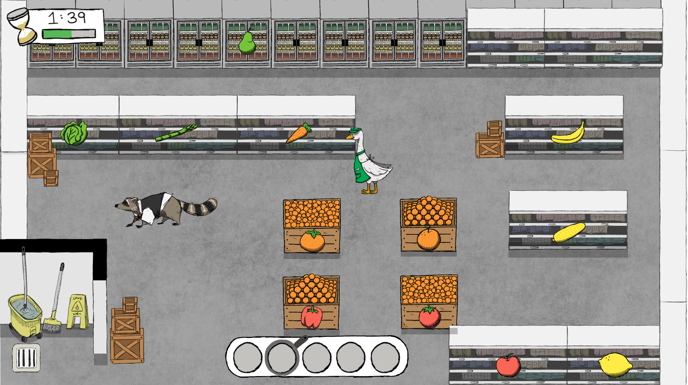
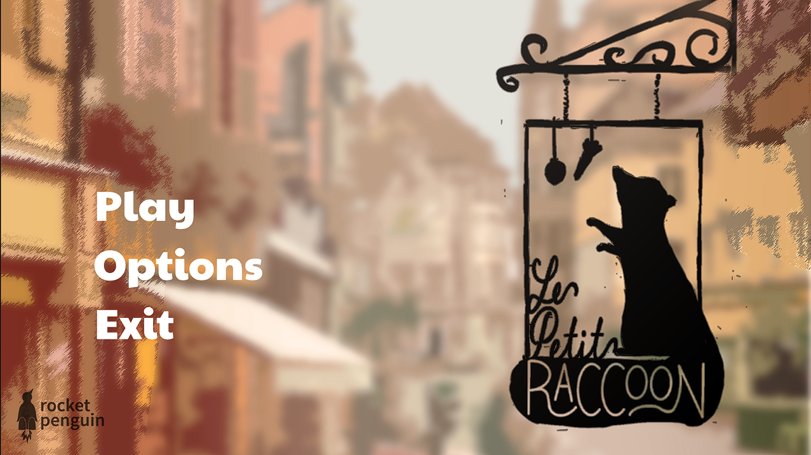
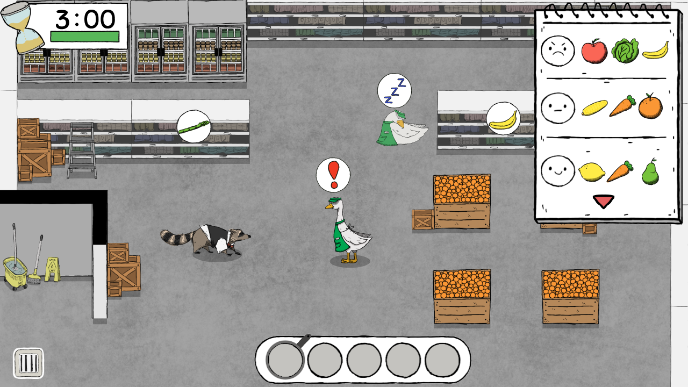
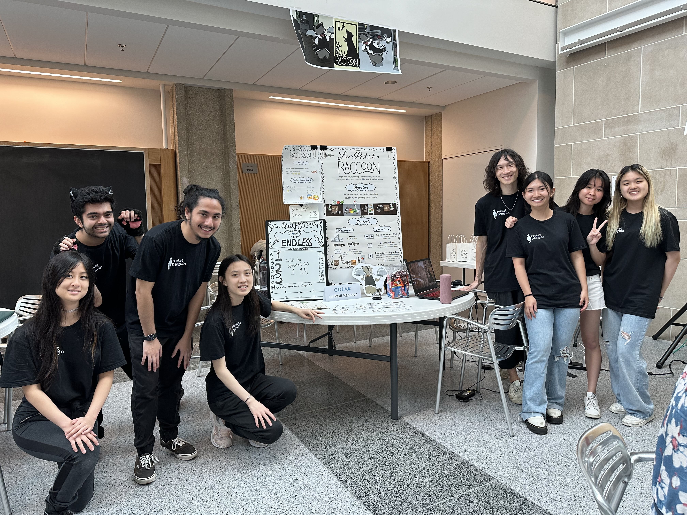

Le Petit Raccoon
UI/UX Designer
January 2024 - May 2024
FigJam/Figma
UI/UX Designer
January 2024 - May 2024
FigJam/Figma
Le Petit Raccoon is a computer game that blends together cooking, memory, and stealth. I worked on this game alongside 9 other designers and programmers as part of a course at Cornell University, Introduction to Computer Game Design. As the UI/UX designer, I storyboarded and designed the game's UI and conducted playtesting sessions to collect feedback. At GDIAC Showcase 2024, we won the award for Most Innovative! We've since launched our game on Steam and became a finalist for BostonFIG 2025.
Before coding up the game, we needed an early prototype to gauge whether or not our game idea worked. Working with my fellow designers, we came up with an interactive game that placed the player in the main character's shoes, literally. The player had to run from table to table, serving customers with stolen ingredients while avoiding the guards' gaze.

As my teammates ran the prototype, I was in charge of conducting short feedback surveys and recording feedback from our players. Overall, many of them had fun playing and enjoyed the different challenges. However, there were three main things that needed improvement:

Click on the image above to watch a playtester play our prototype.
These insights were very helpful, as I didn’t anticipate the patience meter having the opposite effect on the player. At the playtesting session's conclusion, I reported these insights to my team. We discussed how to address these issues and came up with the following:
Now that gameplay had a foundation to build off of, it was time to think about the game's look. Using FigJam, I created a file in which my fellow designers and I could collaborate on and share ideas. FigJam allowed us to use visual references to better communicate our ideas, resulting in a mutual agreement on a sketchy, storybook aesthetic.

A cropped view of our moodboard. Click on the image to view the FigJam file.
Before diving deep into development, we needed to figure out what made our game different. That way, we could focus on polishing the more unique aspects of our game, making it stand out among its competition. With my team, I looked into games like Overcooked! and Diner Dash, which had aspects such as multiplayer mayhem and fast-paced mouse action. Although our game didn't have these features, it presented its own unique challenge with its stealth segment and fast-paced keyboard action. See our full competition analysis by clicking on the image on the right.

Over the next few weeks, we worked in an iterative cycle of design, implement, and playtest. While the programmers coded the game’s mechanics, my fellow designers and I produced the game’s art. Once both sides were ready, the programmers implemented our art into the game. At playtests, I collected feedback from playtesters, often revealing hidden bugs and frustrations. Their feedback then informed our next steps.
As soon as the game's environmental assets were completed, I created mockups of the UI using Figma. When designing the in-game user interface, I aimed to make it stand out while also complementing the game’s art style. For the inventory bar and timer, making them white created the most contrast with the restaurant’s dark brown and the grocery store’s gray floors. Adding a hand-drawn black border for each element helped give them a storybook aesthetic.

Early Figma mockup of UI in the restaurant.

Early Figma mockup of UI in the grocery store.
To envision the user flow, I created a mid-fidelity prototype in Figma. From it, I realized that the game was missing some additional screens and interactions. Namely, a controls screen that the player could reference and a “restart” option in the pause menu. After communicating with the programmers on their implementation, I worked on these items in later iterations of the game.

Click on the image above to interact with the prototype.
Throughout our various playtest sessions, I often heard varying complaints about the memorization aspect of our game. Some players found it difficult to remember all the requested ingredients, while others had no problem doing so. As most of the game's difficulty came from the memorization aspect, giving the players a tool to reference all requested ingredients would significantly reduce the game's challenge. Still, I didn't want to disregard the complaints.

New notepad UI added to the grocery store section.
As a compromise, I came up with a new mechanic - the notepad. The notepad would only record ingredients from the first 3 orders, helping players with memorization while preserving some difficulty.
After pouring in weeks of hard work into our game, we were excited to show it off on Showcase day. Throughout the day, families with curious children stopped by our table frequently, often staying to play a few levels. We were all more than happy to guide the new players through our game and watch their reactions to Rocko’s dilemma in real-time. At the end of the event, our professor began the awards ceremony. It was then that he announced that our game had won Most Innovative!

Team Rocket Penguin at GDIAC Showcase 2024.
We were ecstatic to see our hard work recognized with an award. After this, we all took a well-deserved break and eventually launched the game on Steam. We also submitted our game to BostonFIG 2025, of which it became a finalist!
This project helped me grow as a UI/UX designer and gave me a taste of what it’s like working in a multidisciplinary team. I became more confident in using Figma, conducting user interviews, and even picked up a few game design skills along the way. But the real highlight of this project was the team itself. Working with them was an absolute joy, as we all wanted the game to be the best it could be. Whenever I needed help determining the feasibility of an idea, I could comfortably discuss it with the programmers to find a workable solution. This experience taught me the value of open communication, shared values, and designing with both creativity and technical constraints in mind.